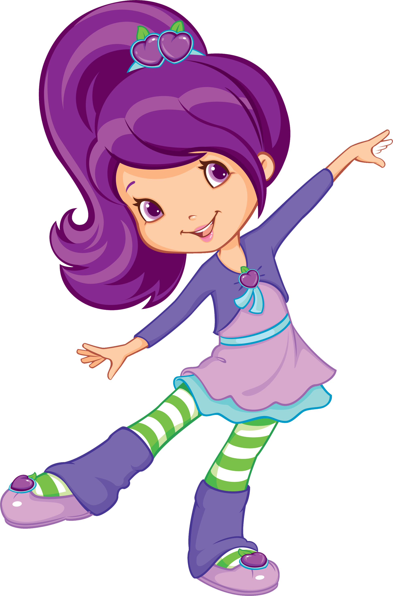
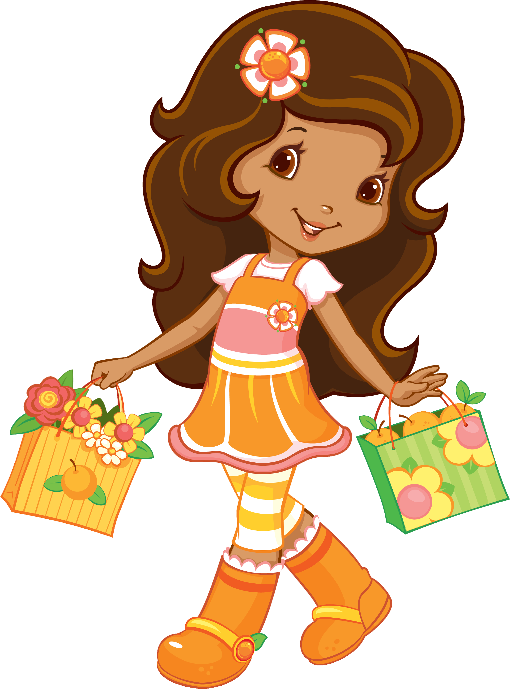
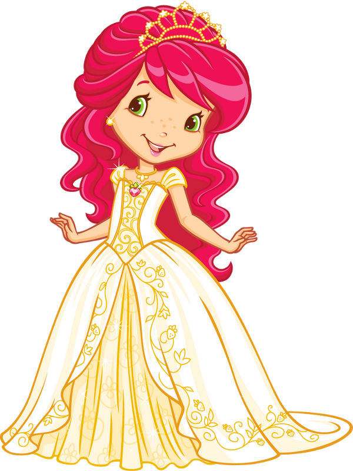

Tu estado mental está en modo optimista. Eres de las personas que, incluso cuando las cosas se ponen difíciles, busca la manera de endulzar el día. Tienes una energía cálida que hace sentir a los demás en casa.

Tu estado mental está en modo seguridad y estilo. Eres una persona que sabe lo que quiere y que suele cuidar mucho los detalles. Te gusta que las cosas salgan bien, que haya armonía y que todo tenga un toque especial.

Tu estado mental es reflexivo y sensible. Estás en un momento donde tu mente quiere pensar, observar y sentir con calma. Tal vez estás procesando cosas importantes o buscando entender mejor lo que te pasa.

Tu mente está en modo energía social. Tienes ganas de hablar, reír, salir o compartir con otras personas. Eres espontánea, curiosa y siempre traes una idea nueva a la mesa.

Tu estado mental está en modo reflexión y calma. Eres una persona que disfruta pensar las cosas con cuidado. Tu mente está llena de ideas, preguntas y curiosidad por entender el mundo.
